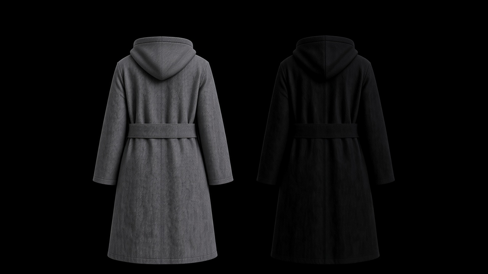
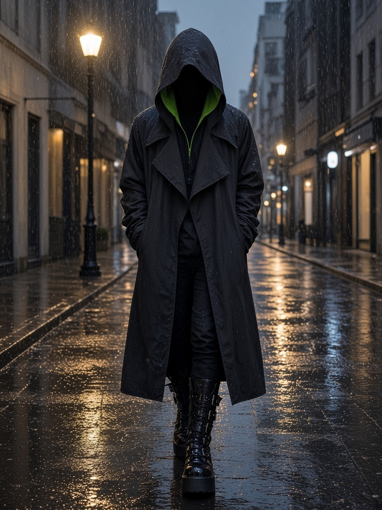

New York
BrotherHoods
One cut. Every cloth.

Bespoke
The order.
The square is the body. Measured to one body. You name the duty and the cloth. The block does not change.
For worthy Brethren, at the lecture or with a cigar.

Transcend
The night it is seen.
The triangle is the soul. Ritual and festival. The same cut, in a cloth chosen to be read across a room. The robe is made from this mesh as well.
The mask covers the face. It is not part of the coat. A separate piece, by Unavailable.


Sport
The coat that works.
The circle is the spirit. Weather and the day. The hood is shelter before it is a symbol. Waxed cotton, coated cloth, anything that can take the rain, cut on the same block.
Govern yourself accordingly.
